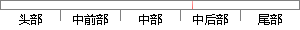

x_n }，数据个数为n，在d维空间中的分布不是椭球状，那么就不适合以一个单一的高斯密度函数来描述这些数据点的机率密度函数。
片段位置图

相似结果|
相似片段 1：，适用于多类别的划分，可以应用于复杂对象建模。例：有一批观察数据X＝{x1,…,xn}，数据个数为n，在d维空间中的分布不是椭球状，那么就不适合以一个单一的高斯密度函数来描述这些数据点的机率密度函数。此时
相似片段 2：可以用一组高斯分布加权求和得到另一种分布，即为高斯混合模型。假设有一批观察数据X=缸1，x2，?，h)，数据个数为n，在D维空间中的分布不是椭球状(如下图(a)，那么就不适合以一个单一的高斯密度函数来描述
相似片段 3： 11? 并令其为 0即可。如果 },...,{ 21 nxxxX ? 在 d维空间中的分布不是椭球状，那么就不适合以一个单一的高斯密度函数来描述这些资料点的机率密度函数。此时的变通方案，就是采用数个高斯函数的加权平均来表示。
相似片段 4：如果观测数据集z=“，t，?，工。)在H维空间中的分布不是椭球状，那么就不适合以单一的高斯密度函数来描述这些样本数据，因此，对于单个采样置，其高斯混合分布的密度函数可表示为其中，羁是混合系数，表示各
相似片段 5：(2)高斯混合模型如果研究的数据五，i=／，Zi?11,在摊空间中的分布不是椭球状，那么就不适合以一个单一的高斯密度函数来描述这些资料点的概率密度函数。此时一般是采用数个高斯函数的加权平均来表示，即
相似片段 6：适合观测点的分布近似椭球状的情况。如果观测数据在d维空间中的分布不是椭球状，那么就不适合以一个单一高斯概率密度函数来描述这些数据点的概率密度函数。此时的变通方案，就是采用数个单一高斯概率密度函数的加权
相似片段 7：∥互卜丽葫唧一。叫广∑。l(卜肋j (2．33)∥代表这些点分布的中心点，而∑代表概率密度函数的共变异矩阵，共同决定了点Xi的分布中心，分布范围等信息。数据点满足椭球状分布的情况可用单一高斯概率密度函数表示，d维空间数据点的分布不是椭球状时，这种单一密度函数来近似描述误差就会很大。
相似片段 8：，‘，e，‘2(一“去)丁艺*一，(x 一户*)上式就是单一的高斯密度函数的概率公式。实践表明，如果 X= {X1 ，……，xn}在 d 维空间中的分布不是近似满足正态分布，那么就不适合以一个高斯密度函数来描述这些点的概率分布问题 。
相似片段 9：描述这一组数据点。(2)高斯混合密度函数很明显，单高斯模型仅有两类别问题的划分，若数据集x在d维空间中的分布不是椭球(或超椭球)状，单一的高斯密度函数就不能用于来描述这些数据点的概率密度了。多工况过程
|
※ 片段修改建议 ※
近似词参考：- 分布：散布 漫衍
- 那么：那末
- 描述：描写 形貌
系统自动生成语句：x_n }，数据个数为n，在d维空间中的散布不是椭球状，那末就不适合以一个单一的高斯密度函数来描写这些数据点的机率密度函数。
注：本片段修改建议为系统自动生成，仅供参考。